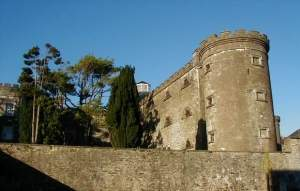

Located 2km from Cork's main thoroughfare, this castle like prison once housed 19th C. prisoners, often in wretched conditions. Wandering through the wings of Cork City Gaol, the atmosphere suggests you are accompanied by the shuffling
| 
| feet of inmates, each representing their particular period in Irish history from pre-famine times to the foundation of the State.
Cells furnished with life-size figures, sound effects and fascinating exhibitions together with a spectacular sound and image presentation tell the social history and contrasting lifestyles of 19th Century Cork and why some people turned to crime. The Gaol experience includes individual sound tour English/ French/ German/ Italian/ Irish & Spanish). Personal guided tours arranged on prior request.
|
Background:
The Cork City Gaol in Sunday's Well, was designed to replace the old Gaol at the Northgate Bridge in the heart of the city. The old gaol was nearly 100 yrs. old, on a confined site, overcrowded & unhygienic.
 In 1806 an Act of Parliament was passed and monies levied locally to allow the building of a new City Gaol. The first site chosen was at Distillery Fields - an area prone to frequent flooding!! This fact, and enlightened thinking that hilly, airy sites were best for containing gaol fever probably influenced the change to the present site.
In 1806 an Act of Parliament was passed and monies levied locally to allow the building of a new City Gaol. The first site chosen was at Distillery Fields - an area prone to frequent flooding!! This fact, and enlightened thinking that hilly, airy sites were best for containing gaol fever probably influenced the change to the present site.
In 1816 red sandstone was quarried from the hill, approach roads constructed, and outside security walls built. By 1818 planning of the interior building could commence and Mrs. Deane, and her son, Thomas, won the building contract. John Hogan, later to become Ireland's greatest neo-classical sculptor, developed sketch drawings from the plans of architect, William Robertson of Kilkenny.
Famous People/Inmates:
|
|
1820s/30s
| Many prisoners (men/women) were held in Cork
City Gaol before being transported on convict
ships to Australia
1848/1849
| Young Irelanders
Denny Lane
Terence Bellew McManus
Ralph & Isaac Varian
1860s
| Fenians
Brian Dillon
John Sarsfield Casey ("The Galtee Boy")
James Mountaine
1880s
| Land League
Hannah Reynolds
1900s
| Countess Markievicz
1920s
| Civil War
Frank O'Connor
Mary Bowles
Sean McCarthy
Todd Andrews
Jim Hurley
| | | | | |